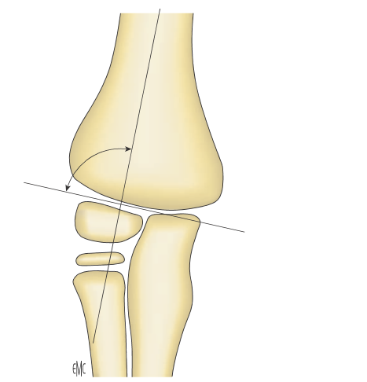
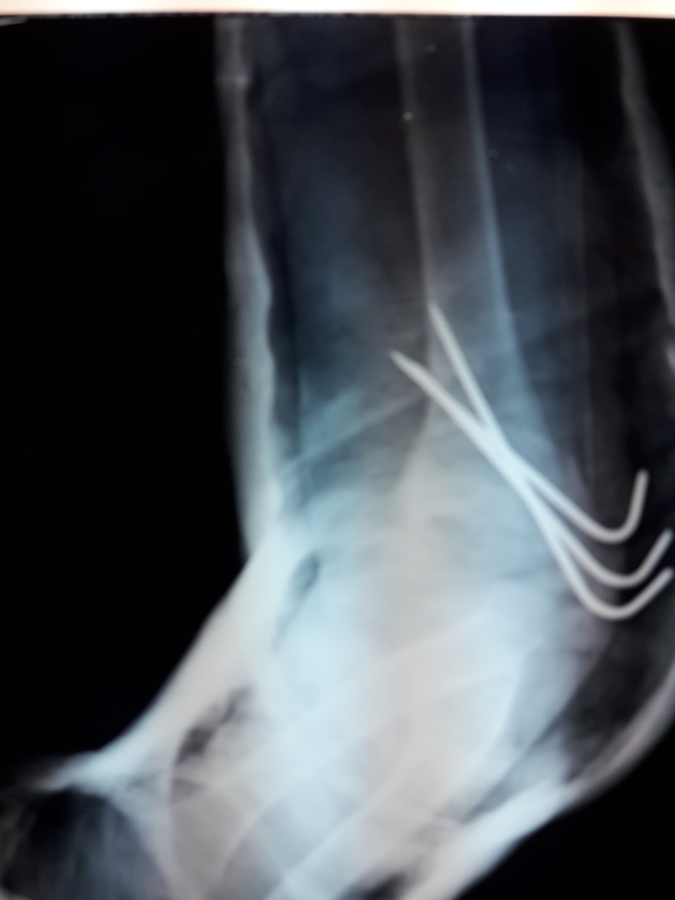
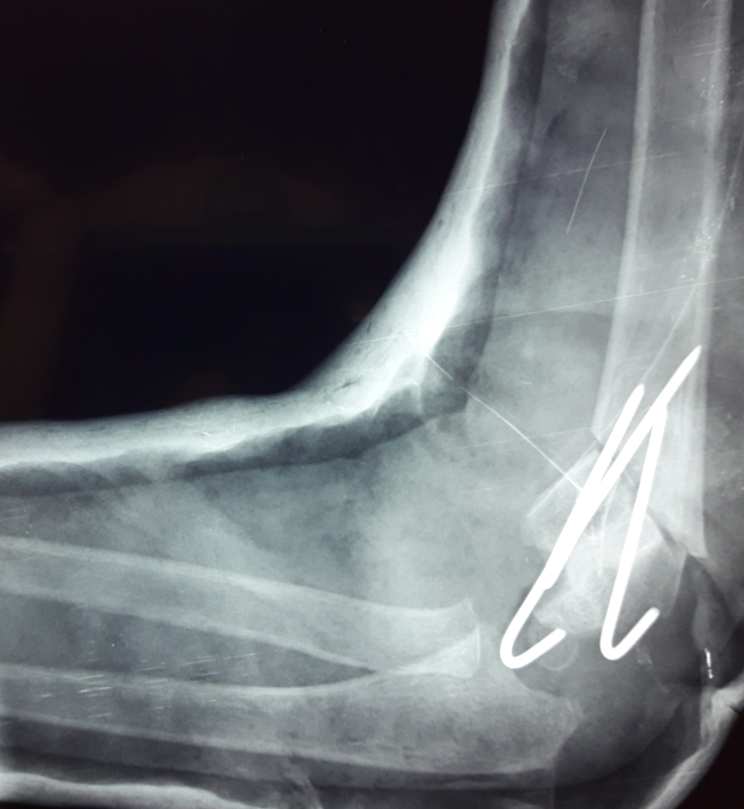
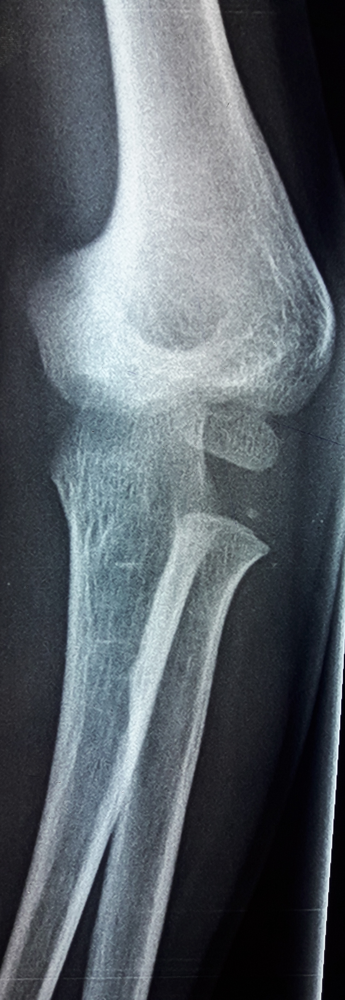
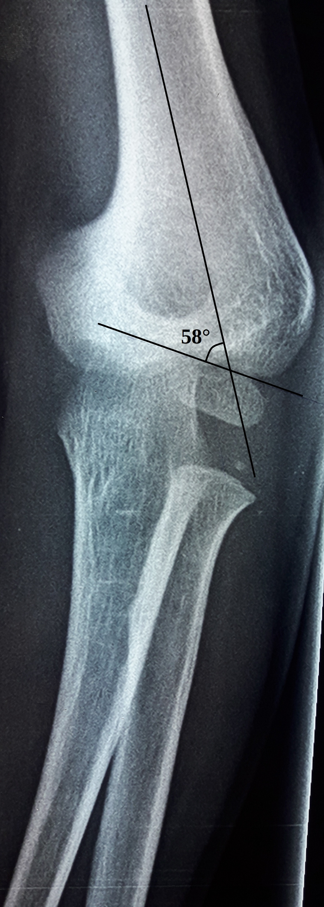
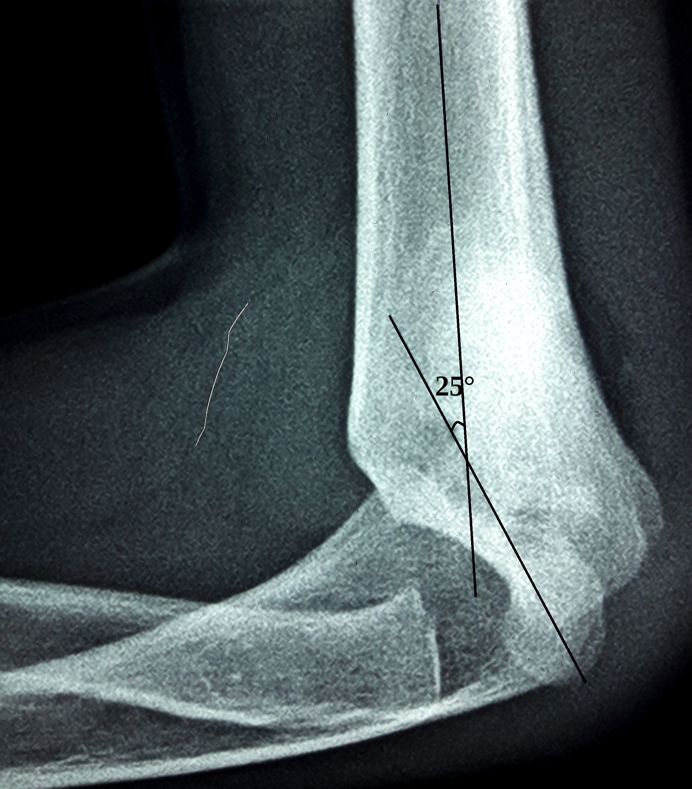

Coude
Cas Clinique 6
Un enfant de 8 ans présente, suite à une fracture supra-condylienne droite négligée, manipulée par jebbar il y a 8 mois, une déviation de l’axe de l’avant bras de 25° en interne et une limitation de la flexion du coude à 90°.
Réponse 1
Il s’agit d’un cubitus varus droit.
Réponse 2
L’angle de Baumann permet d’évaluer la valeur du cubitus varus. Sa valeur physiologique est de 72° ± 5° (fig2)

Réponse 3
Ostéotomie de valgisation et de flexion permettant la correction du varus et l’amélioration de la flexion (fig5, fig6)


Réponse 4
- Instabilité du coude avec luxation postérieur récidivante ou luxation de la tête radiale.
- Risque de fracture du condyle latéral.
- Risque de paralysie tardive du nerf cubital

Commentaire 1
A l’état normal, il existe au coude un certain degré de valgus physiologique, plus important chez la fille que chez le garçon.
Ce cubitus valgus augmente avec l’âge, surtout lors de la poussée pubertaire, il est en moyenne de 8°chez le garçon et de 11° chez la fille. Il se transforme en varus lors de la flexion complète du coude.
Le cubitus varus représente un cal vicieux en varus, consécutif aux fractures supra condyliennes, généralement déplacées de l'extrémité inférieure de l'humérus. Il a pour cause soit une mal union supra-condylienne soit une ostéonécrose de la trochlée. Les composantes de la déformation sont un varus, une rotation interne et une hyper extension
Commentaire 2
Afin de détecter les déviations axiales propres au coude, on utilise certaines mesures:
• De face coude en extension et avant-bras en supination maximale on s'aide de l'angle de Baumann, (formé par l'intersection entre l'axe de l'humérus et une ligne parallèle au cartilage de croissance du condyle externe) en moyenne de 75°(fig3), (avec des écarts tolérables de + ou - 5°) représentant un cubitus valgus de 10° et dont l'avantage majeur est de rester fiable coude fléchi, à condition que le rayon incident soit bien perpendiculaire à la palette

• De profil on mesure l'anté-flexion épiphysaire inclinaison entre l'axe huméral et la ligne perpendiculaire au cartilage de croissance) qui est de 40° (fig4).

Commentaire 3
La technique le plus souvent réalisée est celle de DESCAMPS, qui consiste en une ostéotomie supra condylienne cunéiforme de soustraction externe d’un coin osseux correspondant à la correction désirée à la recherche de la restauration d’un valgus physiologique. Cette ostéotomie est effectuée à la jonction diaphyso-métaphysaire.
Commentaire 4
Le cubitus varus n'altère que peu la fonction du membre, l'indication est posée pour la gène esthétique occasionnée mais aussi pour éviter certaines complications telle que la paralysie nerveuse ulnaire, l'instabilité rotatoire postéro-latérale et la fracture secondaire de l'humérus distal.
Références
Tien Y.C., Chih H.W., Lin G.T., Lin S.Y. Dome corrective osteotomy for cubitus varus deformity.
Clinical orthopaedics and related research. 2000 Nov;380:158–66.Pouliquen J.C., Glorion C., Langlais J., Ceolin J.L. Encycl. Méd. Chir. (Editions Scientifiques et Médicales Elsevier SAS, París),
Appareil locomoteur.2002. Généralités sur les fractures de l'enfant; pp. 14–031. .Jain AK, Dhammi IK, Arora A, Singh MP, Luthra JS.. Cubitus varus: problem and solution.
Arch Orthop Trauma Surg 2000;120:420–5.Dowd G. Varus deformity in supracondylar fractures of the humerus in children.
Injury 1979;10:297—303. .Ippolito. E., Caterini. R., Scola. E. Supracondylar Fractures of the Humerus in Children. Analysis at Maturity of Fifty three Patients Treated Conservatively.
J. Bone Joint Surg 1986,68:333-44. .